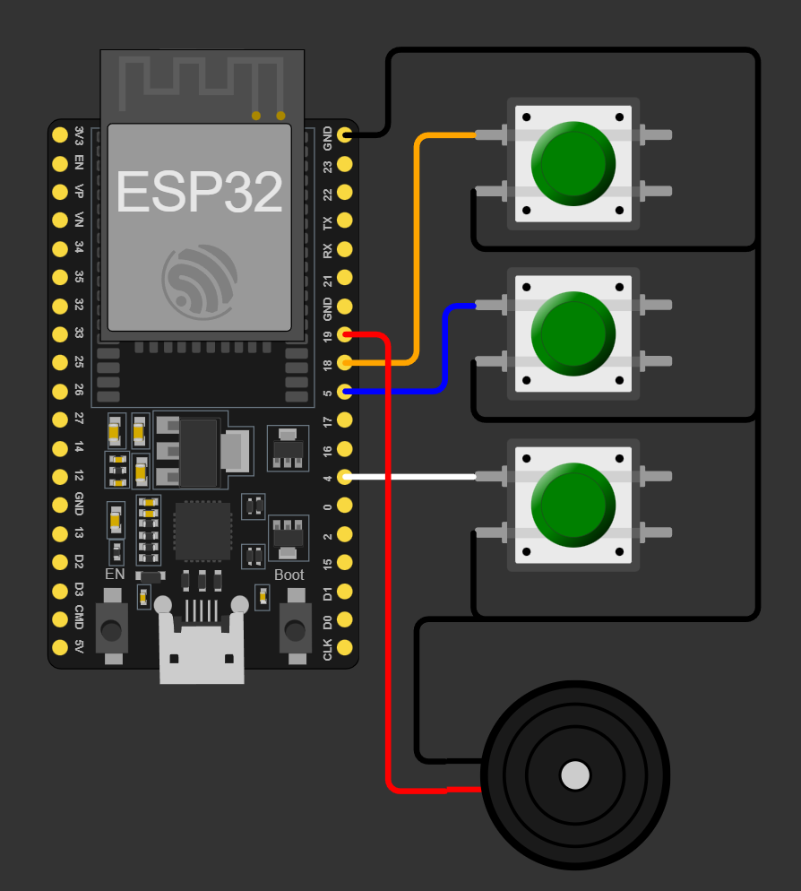

Programación y entradas digitales: botones que significan eventos
Organizar un programa con funciones y detectar una pulsación sin confundir nivel, transición y rebote.
Entrada, decisión y salida
Un programa de hardware transforma observaciones en decisiones. El pulsador es la entrada; una condición representa la decisión; una luz o un sonido comunica la salida. Antes de escribir instrucciones, define el comportamiento: “mientras mantengo pulsado, la luz permanece encendida” es diferente de “cada pulsación cambia el estado”. La primera regla usa un nivel; la segunda necesita reconocer un evento. Si no se aclara esa diferencia, el programa puede parecer defectuoso aunque ejecute exactamente lo que se escribió.

El proyecto del piano permite observar esta cadena con tres entradas. Cada botón selecciona una acción. El dado digital añade una variable que conserva un resultado después de la pulsación. Reutilizaremos ambos como ejercicios de programación; no es necesario repetir dos montajes completos para enseñar el mismo concepto. Cada estudiante modifica una regla y debe explicar cuándo se evalúa.
Tipos, condiciones y funciones que ayudan a pensar
Una constante nombra una elección que no cambia durante la ejecución: por ejemplo, el número de pin. Una variable conserva información que sí puede cambiar. bool representa dos estados lógicos; un entero representa un conteo; float permite valores fraccionarios con precisión limitada. El tipo también afecta las operaciones. Si dividimos dos enteros, el resultado sigue reglas de aritmética entera. Escribir la unidad junto al nombre, como tiempo_ms o distancia_cm, reduce confusiones sin exigir un lenguaje más complejo.
Una intención y su representación
| Intención | Ejemplo | Uso |
|---|---|---|
| Pin fijo | constexpr uint8_t BTN=18 | Relacionar esquema y código |
| Estado | bool encendido=false | Conservar una decisión |
| Tiempo | uint32_t ahora=millis() | Medir intervalos |
| Magnitud fraccional | float distancia_cm | Expresar una lectura |
Una función agrupa una tarea con entradas y una salida comprensibles. Una función llamada actualizarIndicador() explica mejor la intención que copiar varias instrucciones dispersas. El alcance de una variable define desde dónde se puede usar. Una variable creada dentro de loop() puede reiniciarse al repetir la función; si debe conservar el estado anterior, hay que elegir una duración de almacenamiento adecuada. El curso usa variables globales pequeñas y explícitas antes de introducir arquitecturas más avanzadas.
División que cambia el resultado
¿Cuánto vale 5/2 en una operación entre enteros y cómo obtienes 2,5?
Ver razonamiento del caso
Entre enteros da 2. Una expresión como 5.0f/2.0f conserva la fracción. La decisión depende de qué magnitud quieres representar.
Pull-up y rebote: dos problemas diferentes
Una entrada sin referencia puede responder a interferencias y mostrar estados variables. INPUT_PULLUP habilita una resistencia interna que tiende a llevar el pin a HIGH. El pulsador lo conecta a GND al presionarlo, así que pulsado se interpreta como LOW. Esa inversión es una convención del circuito. No se corrige cambiando cables al azar: se relacionan nivel físico y significado en una tabla de verdad.
Pulsador entre GPIO18 y GND
| Situación | Lectura | Significado elegido |
|---|---|---|
| Abierto | HIGH | Reposo |
| Presionado | LOW | Solicitud |
| Lecturas alternantes breves | HIGH / LOW | Posible rebote |
El contacto mecánico puede abrir y cerrar varias veces durante una sola acción. El pull-up fija el nivel cuando está abierto, pero no elimina ese rebote. Una estrategia sencilla acepta una lectura nueva solo cuando permanece estable durante un intervalo. El valor de 25 ms del ejemplo es una decisión de aula para comprobar, no una constante universal de todos los pulsadores. Al medir la respuesta importa también la latencia que esa espera introduce.
Una pulsación, varios cambios
Un contador aumenta cinco veces al tocar una vez el botón. ¿Basta cambiar INPUT por INPUT_PULLUP?
Ver razonamiento del caso
Primero se necesita una referencia válida. Si ya existe, hay que distinguir transición y rebote: contar una transición estable, no cada recorrido de loop() con el botón pulsado.
Lectura del antirrebote incluido
Núcleo de c02_boton
bool raw = digitalRead(BTN);
if (raw != rawPrevious) {
rawPrevious = raw;
changed = now;
}
if (uint32_t(now-changed) >= 25
&& raw != stable) {
stable = raw;
digitalWrite(LED, stable == LOW);
}raw es la lectura instantánea. rawPrevious permite reconocer que cambió. changed conserva cuándo se produjo el cambio más reciente. stable representa lo que el programa acepta después de la espera. Durante esa espera, loop() puede seguir atendiendo otras tareas. Al separar estas variables evitamos llamar “estado del botón” a tres cosas que no significan lo mismo. La versión completa emite PRESS y RELEASE para observar ambas transiciones.
El piano original usa prioridades con if y else if: si se pulsan dos botones, la primera condición verdadera domina. Esa decisión puede ser correcta para un instrumento monofónico. Para una interfaz de mando hay que documentar qué ocurre con órdenes simultáneas. El alumno prueba dos entradas y describe el resultado antes de proponer otra prioridad. Programar también consiste en resolver esas situaciones límite.
Laboratorio y reto del dado
- Conecta GPIO18 a GND mediante un pulsador; utiliza INPUT_PULLUP.
- Ejecuta c02_boton y relaciona PRESS y RELEASE con la acción física.
- Mantén pulsado dos segundos: verifica que no aparezcan nuevas pulsaciones aceptadas.
- Añade un contador que aumente únicamente al aceptar stable == LOW.
- En el piano del laboratorio, predice la prioridad de dos teclas y compruébala.
- Como reto, usa el evento para solicitar un nuevo valor del dado y conserva el resultado.
- Documenta las resistencias por segmento si se propone montar un display desnudo en hardware.
La simulación del dado sirve para comprender condiciones, variables y presentación. Un display real puede ser de ánodo o cátodo común y necesita limitar corriente por segmento según su montaje. La ilustración original del laboratorio no sustituye esa revisión. Por eso el reto obligatorio evalúa primero la lógica y la tabla de segmentos. La construcción física se realiza con un esquema eléctrico completo revisado por el docente.
Un contrato para las entradas humanas
En un banco relacionado con UAV, una pulsación puede solicitar una prueba, reconocer un aviso o cambiar la pantalla. Define el estado inicial, la acción permitida y qué sucede si el botón queda retenido. La interfaz debe poder explicarse a otra persona. Una buena prueba incluye pulsación breve, larga, doble, simultánea y al iniciar el equipo. Ninguna de esas pruebas requiere un dron en vuelo; se aprende con una entrada y una salida observables.
Casos de prueba de la interfaz
| Prueba | Resultado que se define |
|---|---|
| Mantener pulsado | Un evento o acción sostenida |
| Dos botones | Prioridad o combinación |
| Pulsado al arrancar | Estado inicial documentado |
| Rebote | Una transición aceptada |
Investiga la diferencia entre un botón con resistencia externa y un pin con resistencia interna habilitada. En el ESP32 clásico, GPIO34–39 son entradas y carecen de pull-up o pull-down internos. La elección del pin, por tanto, cambia el circuito necesario. Relaciona esa información con el hecho de que esos mismos pines pueden resultar útiles para lecturas analógicas. El nombre “GPIO” no promete exactamente las mismas funciones en todos los números.
Práctica guiada
- Mostrar una pulsación larga y pedir la diferencia entre nivel y evento.
- Rastrear raw, changed y stable con una tabla temporal.
- Comprobar c02_boton y añadir el contador de eventos.
- Resolver la prioridad del piano y el reto lógico del dado.
Preguntas de cierre
¿LOW siempre significa apagado?
Su significado depende del circuito; con pull-up puede representar un botón pulsado.
¿El pull-up elimina el rebote?
Fija el nivel en reposo; el rebote se trata con otra estrategia.
¿Por qué no contar cada loop() en LOW?
Porque una pulsación sostenida atraviesa muchas iteraciones.
Entrega
Código del botón, tabla nivel/evento y cuatro pruebas de interfaz.
Proyectos MECRO relacionados
- 02. Piano Electrónico · Núcleo. Funciones, entradas y PWM Abrir referencia Wokwi
- 05. Dado Digital · Reto. Lógica del dado; revisar resistencias del display físico Abrir referencia Wokwi
Fuentes para ampliar
[MECRO] MECRO. Laboratorio Electrónica con ESP32: veinte proyectos.
[GPIO] Espressif Systems. GPIO y restricciones de ESP32 clásico.
[TIME] Arduino. Referencia del lenguaje: millis.
[MIT] Agarwal y Lang / MIT OpenCourseWare. 6.002 Circuits and Electronics; texto: Foundations of Analog and Digital Electronic Circuits (2005).